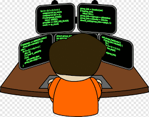

When I was a child, I dreamed that someday I'll become a Doctor. I want to cure deseases and help people recover from illness. But I realized that it cost so much and it takes time to become one. Imagining what life would be if I pursue my dream it would be so hard especially I had a solo parent raising me. so, without a doubt I choose to stop hoping to be in a medicine field and think an alternative profession.
After several of reconsiderations and asking for recommendation from peers and relatives, I decided to become a future programmer or web developer. that's why I studied ICT mobile app and web developing back when I was in Senior high School and pursued BSIT right now in College